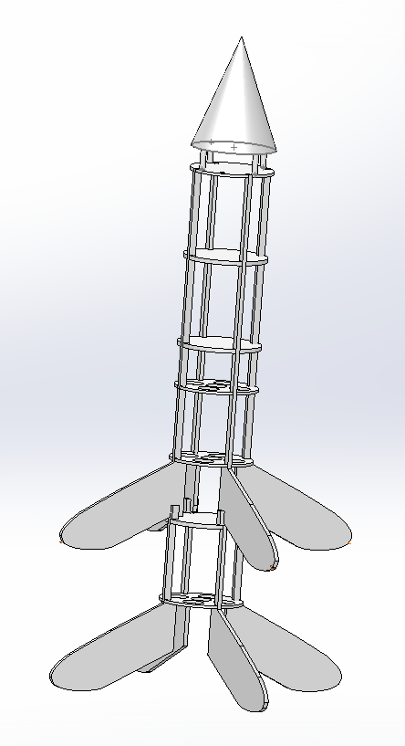
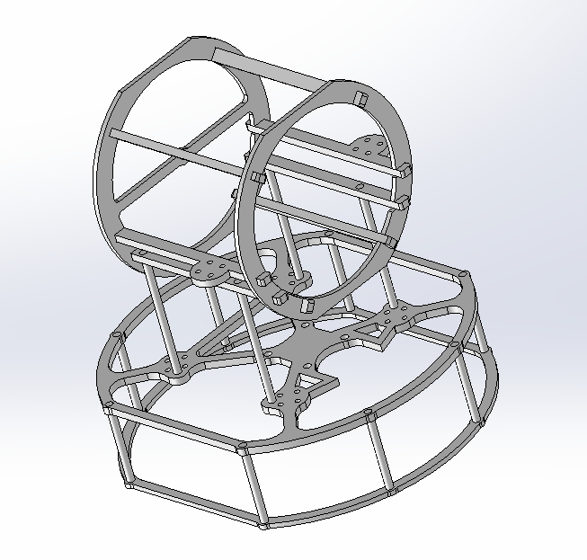
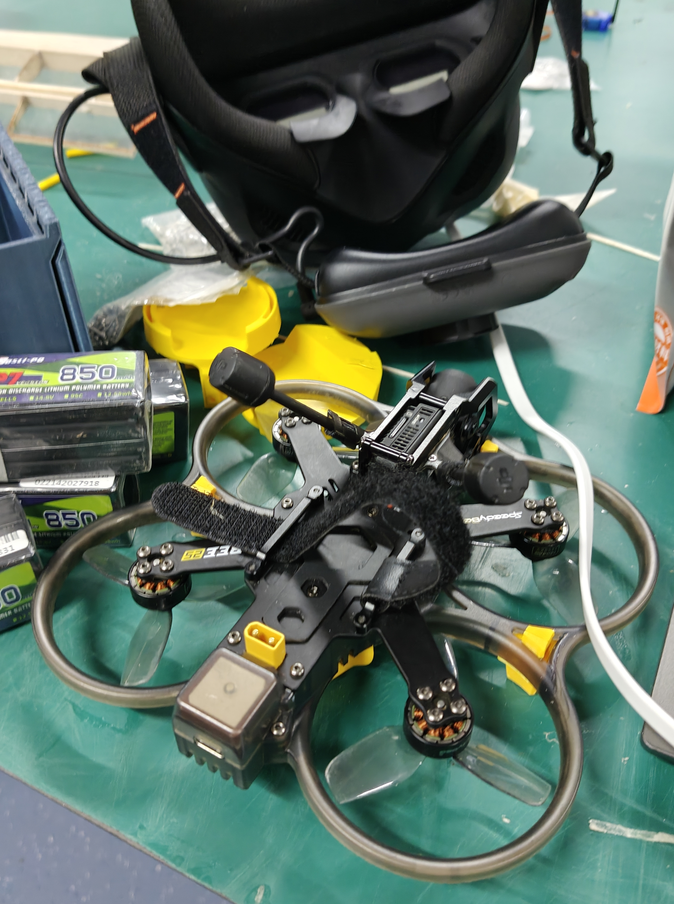

![Featured image of post [随记]2025大一总结](/images/cover/zj0.jpg)
[随记]2025大一总结
不知不觉大一已经结束，还有两个月就要变成中登了，有些压力。这一年学的东西并不多，但还是有不少收获，主要是心态方面的转变
心理篇
——一句话总结，就是无尽的焦虑和痛苦 。
噩梦的开始
没能进到喜欢的信息安全专业，而是被录取到了电子商务，这是我想都没想过的。曾经梦想中和从他人口中得知的大学是时间自由，可以尽情学喜欢东西的地方。但现实是每天上着无聊又没价值的课，看到所有系统里自己的专业都是电子商务，心里慢慢只剩下恶心。以前只是觉得这个专业没什么技术含量，现在完全变成了我最不想提起的存在，每天看到同学与老师，专业与学院，我心里都会有一种强烈的异样感：我不属于这里。
尽管如此，我还是有希望逃离。学校一共有3次转专业机会，完全可以转入自己喜欢的专业，但是有一个致命的问题：本专业成绩好才能转。要成绩好就只能忍着恶心，浪费时间在不喜欢的东西上，一上不喜欢的课就加重焦虑和痛苦，导致我难以集中精力，反而没心思学习。再加上家乡和浙江的教育资源、高考压力不一样，我一入学就落后其他同学不少，这让我的希望逐渐渺茫。
之后就陷入了恶性循环，焦虑了一整学期，基本没学进去什么，也几乎失去了希望，慢慢变得一遇到问题就怪环境，对别人要求高，对自己却总找借口，遇到困难第一反应就是躺平。就这样，不愿再次回想的大一上学期结束了。
一丝希望
第一学期结束就可以报名转专业了，我一共报名了三种，普通，卓越和双学位。命运给我了一个好机会，学校新开的这个双学位专业里面包含信息安全，而我在寒假奇迹般的以9/10的排名被录取，可喜可贺。
迷茫与后悔
虽然转了专业，但新专业的课程是一半网安一半管理。无论是课程中，还是专业名中，抑或是我所属的管理学院中，一看到管理，我就会想起之前的痛苦，感受到强烈的恶心。我开始迷茫到底应该继续转专业还是留在这里，同时对上学期被浪费掉感到后悔。曾经参加过那么多比赛，几乎每次都可以拿到前几名，那些曾让我骄傲的技能，在一条条比赛群的消息里，在别人的讨论中变得那么陌生，我甚至连插一句话都觉得多余。这让我越来越自卑，不愿接受自己已经泯然众人的事实。尽管已经脱离了困境，但我的焦虑也并没有被缓解，只有痛苦减轻。
我也开始承担上学期恶习导致的恶果，这学期整个人变得过于松懈，注意力差、做事没耐心、不愿动脑思考，这些问题没随着压力减轻而好转，而是将我拖向深渊，每天上课提不起劲，还总是打着自学的幌子玩手机，自己都觉得难以接受。不过唯一的进步就是心情变好，也有心思自学一些东西，研究自己的爱好了(^_^)。就这样，浑浑噩噩的大一下学期结束了
改变
从寒假开始就已经有改变现状的想法，但一想到改变，就想到之前浪费的时光、和他人的差距、自己的失败，所以一次次焦虑，给自己找借口，导致整整一学期我的改变都微乎其微。期末，我突然觉得如果再不真正做出改变，就彻底赶不上其他人了，美好的大学生活也将离我而去。至于改变的方法，由于之前学习完都只留下记忆，非常虚无缥缈，而且如果忘记，就和没有学过差不多，因此我选择了写博客记录下学习的过程，为了让我在努力这件事至少能被我自己看见。
我认为仅仅过完了一个大一，时间还来得及，我不再跟那些社团里的大佬比较，专注提升自己，哪怕最后不如他们，也比现在这样更好。现在想想，我注重知识的广度，他们注重知识的深度，也许我并不落后于他们，只是我没发现罢了。
当局者迷
我上面所提到的状态差、焦虑，也许都是我为自己的懒惰找的借口，真正的事实是我好吃懒做的度过了大一也说不定，这件事的答案我目前无从得知。
社团篇
今年上半学期，加入了0RATYS和航模社，这既是我的希望与梦想，也是我一部分的压力来源。
航模
加入
入社考核分为两次，一是飞手选拔，二是方向选择。第一次考了sw画火火箭和cad画fpv，还有最重要的模拟器。
我是初中就玩过固定翼的究极老登，虽然玩了好几年连一个航线都飞不下来，再加上多年没碰，但依旧手感爆发，第一次训练飞完航线，之后甚至练会了倒飞，最后理所当然的模拟器分数第一，总分前几。这是我设计的火火箭

然后就是分方向，按理说我更适合玩固定翼，也确实喜欢，但是高中就憧憬fpv，感觉fpv又好玩又帅，再说了高中幻想系列总得实现一个吧，于是就选了微折。结果进群后发现5人只能进2人。当时听说固定翼组依旧统一训练，暂时不细分方向，我就一直以为被微折淘汰掉就跟固定翼一起训练了，后面才知道淘汰就寄了，好险(>_<)。
当时其实并没有抱太大希望能进组，因为同组有两个同学有基础，训练时非常熟练，另外两个同学选择了退出。我也被组长劝退过，因为他认为我先加入固定翼组再额外学习fpv会更容易，但我不服输，还是坚持下来。最终考核有模拟器，焊接，理论，模拟器我不如别人，没有时间加分，但没扣基础分，焊接我拿到了98高分，大概是手比较稳。理论分数不高，由于我当时有些失去希望，就没怎么准备。但最后我居然以0.2的分差超过了最后的同学进来了，最幸运的一集。
练习
成功加入后就是每周去航模室训练，寒假照着图片复刻了队里的fpv图纸!

3月我第一次学会设置飞机，然后第一次飞了真机。练了一个月悬停，终于从一飞就炸机到稳定悬停。月底第一次戴眼镜飞行，没过多久，4月初我就有了自己的第一架fpv

5月初，我感觉目前用顶级的图传有些没必要而且浪费，再加上总担心炸坏，于是把o4pro拆下来卖了换成小o4，还有了自己的工位。暑假即将开始半个月的训练，我会把这项爱好一直坚持下去
网安
加入前
高中就非常坚定大学要学网安，入学以后自然是要加入网安社。其实刚开始想加入vidar-team，也听了他们的几次讲座，而0RAYS的讲座总是刚好碰上我有事的时候，就没能听上（悲。第一学期两个社团都有新生赛，可是当时我的全部精力都放在转专业上，导致没有一场新生赛拿到好成绩，尤其是0RAYS的新生赛一道题也没有做出来，可他们还是让我加了进来，泪目
迷茫
加入后就是一学期的迷茫，因为感觉其他同学都学的好快，懂得好多，而我不知道该从哪里入手，也不太敢和他们交流。再加上这学期的心态问题，导致大半学期过去就学了一些简单的misc基础，刷完了buuctf上面misc的前三页题目。工作室我也不敢去，觉得自己什么都不会，去了也帮不上忙，而且没熟人，去了会尴尬。每次比赛就阴暗的窝在寝室看别人解题，想自己试试发现跟不上，完全不会，所以基本都是负反馈，有点难受(´°̥̥̥̥̥̥̥̥ω°̥̥̥̥̥̥̥̥｀)
反思
后来想明白，既然这样干脆就不要纠结比赛，把目光放在学习本身。无人机，网安，电子制作是我喜欢的东西，那么我现在应该结合我的兴趣，所以我决定转到iot安全方向，也许有一天能将它和FPV结合。
就这样开始新一轮的学习，队里的学长建议我复现esp32thuctf的题目，于是我就先看了esp32的教程，想看完教程再复现。后来发现这样根本记不住，学习方法有问题，于是就决定先跟着wp做一遍，然后让gpt帮我一点点分析代码，同时学习。
还有一件有趣的事：高一时我犯中二病，幻想成为大黑客时，买了无线网卡破解WiFi（当然没成功），而现在我居然又在用那个网卡抓包，算是一种莫名其妙的轮回。
总结
总体上来看这学期对航模的学习比较不错，跟上了进度，也进步很多，但网安方面我对自己并不满意。如果高中的我看到现在的我，一定会说 你这一年都在干什么，我的梦想被你搞砸了。为了补偿曾经那心怀梦想的自己，我觉得我必须行动起来了
学习篇
成果
- solidworks基本使用
- ctf misc基础
- 手机root
- fpv的飞行与组装
- esp32thuctf复现 （一半）
- 跟着大佬们打了几个ctf比赛（基本不会）
- 第一个电子制作项目辉光管时钟（开源复刻）（一半）
近期想学
- c和c++，读完c primer plus和c++ primer plus
- 电子制作入门，小时候玩过很长时间arduino uno，用的图形化编程，突然学esp32有些不习惯，主要是freertos不熟悉，可以先学arduino和画板子
- ctf iot，下学期重点学习，虽然已经比其他同学落后一年，不求打出成绩，只是我当时打这个比赛的初衷要实现，也就是学知识
- 街攀（优先级低）高中幻想系列，如果航模之后比赛能拿个好成绩，就把fpv练习时间拿一部分给街攀
- 跑酷（遥远）高中幻想系列，但还是先脱离现在这个死宅样子再说吧
暑假安排
- fpv训练
- espctf复现完成
- 辉光管时钟做完
- 宿舍网络与设备的方案做好，开学动工
- 刷iot安全的题
- 改掉焦虑就玩手机停不下来的坏毛病